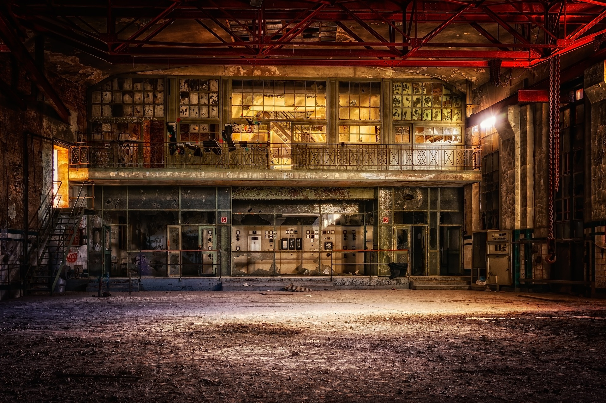

The idea for the setting of the game was to be a forest in america with some old abandoned buildings around.
These buildings consist of a military base, a factory, an apartment building and some shacks dotted around. All the buildings will have enemies near them,
in order to try and prevent the player from achieving their goal, which is to collect an item from each building. The forest is dense and thick, which allows enemies to
hide and catch the player unnoticed. All the buildings are meant to look abandoned, like everyone just left mid way through their normal work routines and never came back. These images helped to portray this in my game as they gave me a good idea of the
"frozen in time" aspect.
